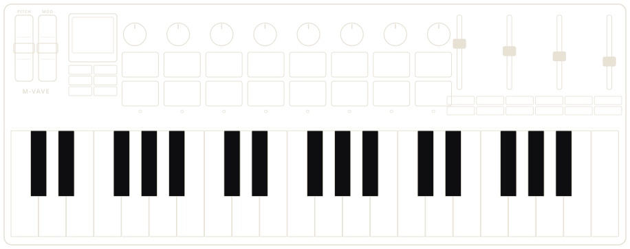

Printed model
Elite or Pro means different packages. A USB name is not the board identity.
Six distinct arguments / one instrument
Each route makes a different decision about what a new SMK-37 musician needs first. They are real HTML/CSS studies, not alternate accent colours. All device actions remain outside these design previews.
Lead with real firmware imagery and the next musical action. Make the sound and hardware relationship immediate.
02 / TRUST FIRST / ARTURIAThe service workbenchShow model, permission, backup warning and restart proof before making promises.
03 / MUSIC FIRST / POLYENDThe living scoreA sequencer-shaped editorial surface. Teach what a pattern is before asking anyone to install.
04 / OBJECT FIRST / TEENAGE ENGINEERINGThe record sleeveAn evocative instrument identity that earns the right to show a precise install route beneath it.
05 / LEARNING FIRST / FELUCCAThe keyboard atlasOrient a novice with the physically accurate 37-key panel, then provide a first action.
06 / PERFORMANCE FIRST / ELEKTRONThe live set sheetTrace a concrete musical arrangement: beat, bass, loop and optional new synth, with release limits visible.
Source references and adaptation trade-offs: design-direction review. The working, inert flow is a separate installer preview.
A small keyboard / a complete musical idea
Build the kick, shape the bass, bring in a BREAK loop. Then take the pattern somewhere live.

Firmware that respects your instrument
Elite or Pro means different packages. A USB name is not the board identity.
Ask deliberately. Denial and missing hardware each need a real, clear error.
Preserve samples. A failed automatic backup warns; it does not block installation.
Transfer is not success. Only a separately observed start can advance the state.
DESIGN PREVIEW. The linked installer simulates each state. It never asks for MIDI access or writes firmware. iPhone route remains unverified.
Start with a kick. Leave space for a bass line. Turn a four-part idea into a performance that survives a power cycle.
DnBOX turns these steps into musical choices. The real first-pattern guide starts with the actual 909 screen, not this editorial grid.
SMK-37 ELITE / PRO · ANOTHER KIND OF INSTRUMENT
A hands-on groovebox for the idea that starts on the keys and ends with everyone moving.

KNOW YOUR INSTRUMENT / 01
Use the pads. Turn the encoders. See which sound owns the pattern. DnBOX should be learnable with the hardware in front of you, not a glossary open beside it.
Thirty-seven physical keys, C to C. Default octave labeling is not assumed.
Rhythm and step work depend on mode and firmware. Follow verified controls.
Reach the parameters in the actual manual, not invented panel assignments.
Projects and recovery are teachable tasks, with separate dedicated tools.
THE LIVE SET / NOT A BENCH TEST
The reliable performance matters more than another feature list. Make a kick, drive the Chicago bass, drop a BREAK loop. Reach a musical result before the documentation gets technical.
Original illustrative bars, not measured audio. Never a CPU, dropout or hardware reliability proof.